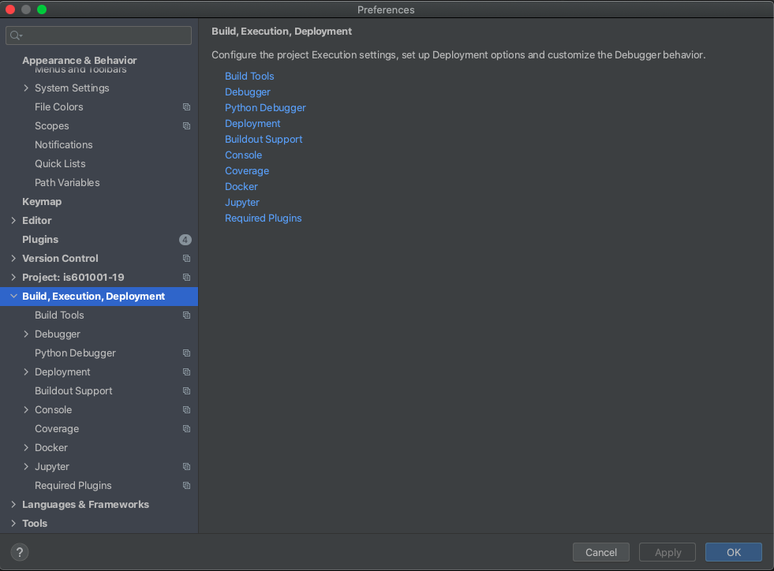
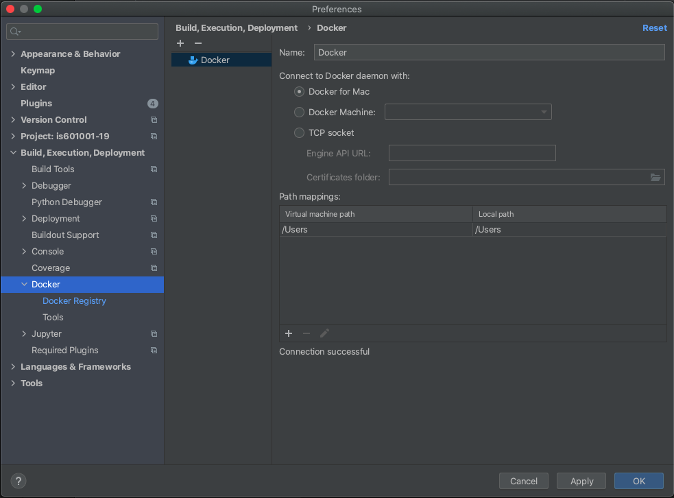
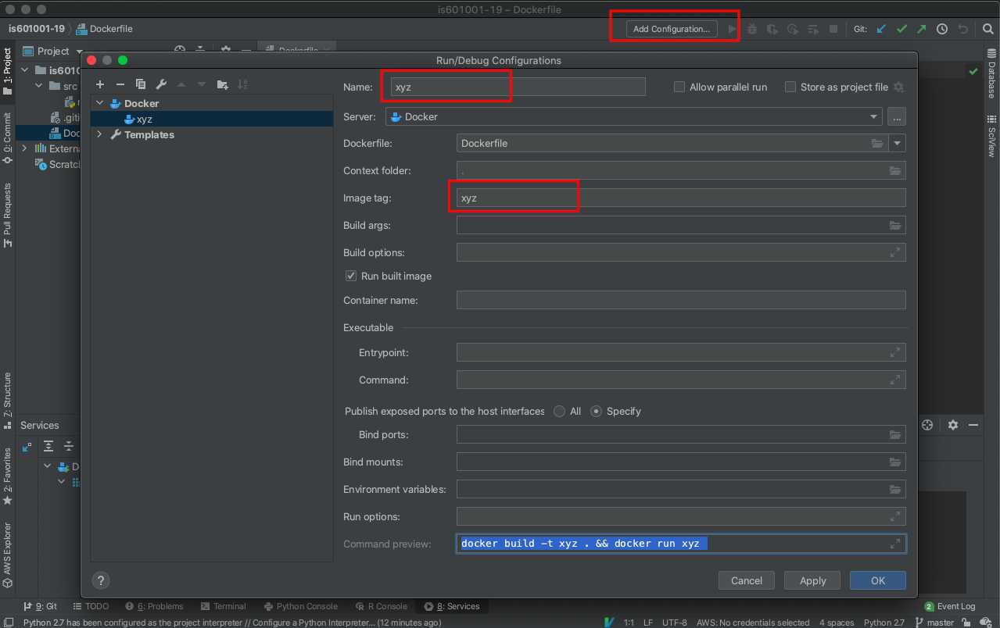
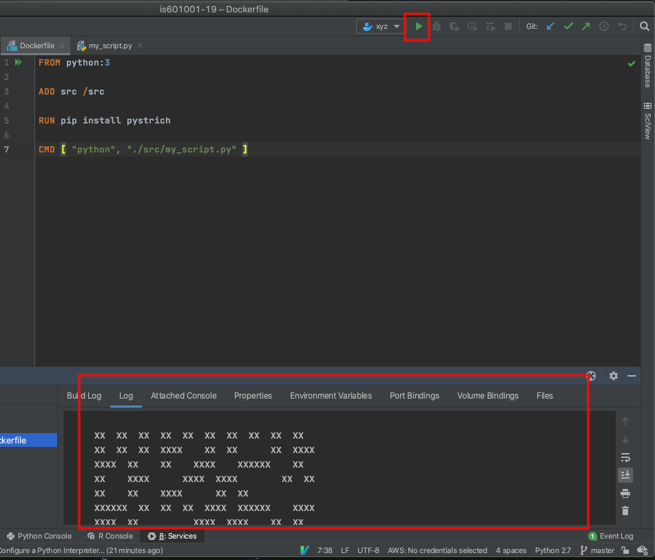

A tutorial about how to connect Docker with Pycharm to write python code
1.) Open Pycharm application and click on new project.
2.) Head over to VCS and clone Git repository of your python project
Example: git@github.com:kaw393939/is601001-19.git
3.) Navigate to Preferences and from the window click on Build, Execution, Deployment

4.) Once Clicked head over to Docker dropdown.
5.) Make sure to have Docker running on your machine before continuing to the next ste.
6.) Once you select Docker you will see a ‘+’ on the window, and select docker for Mac, click on it and if the docker is up and running it should show connection successful.

7.) Once Docker is running navigate to the Configuration dropdown as shown below, once clicked on “Add Configuration” Window will come up, click on ‘+’ Icon on the left of the window and select docker.

8.) Once docker is selected, name your image for example above named “xyz”.
9.) make sure to have according image tag field filled as well.
10.) Click on Apply and OK once completed.
11.) This will allow you to create a Python project in combination with Docker Server. Once you have written the python script, click on Play icon and the result or errors will be shown below.
